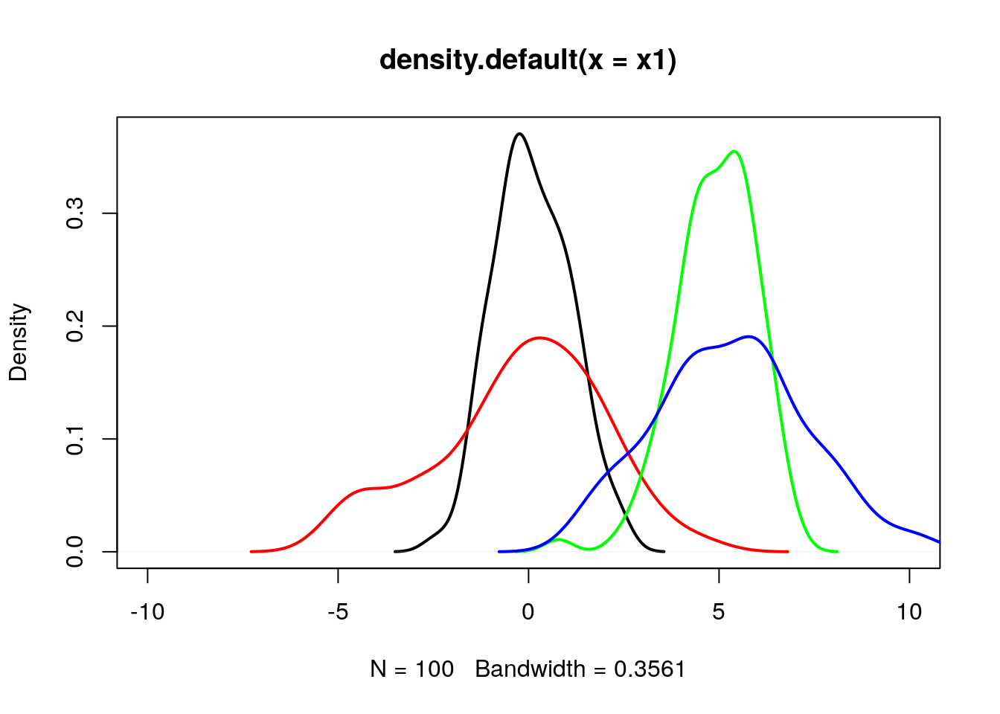
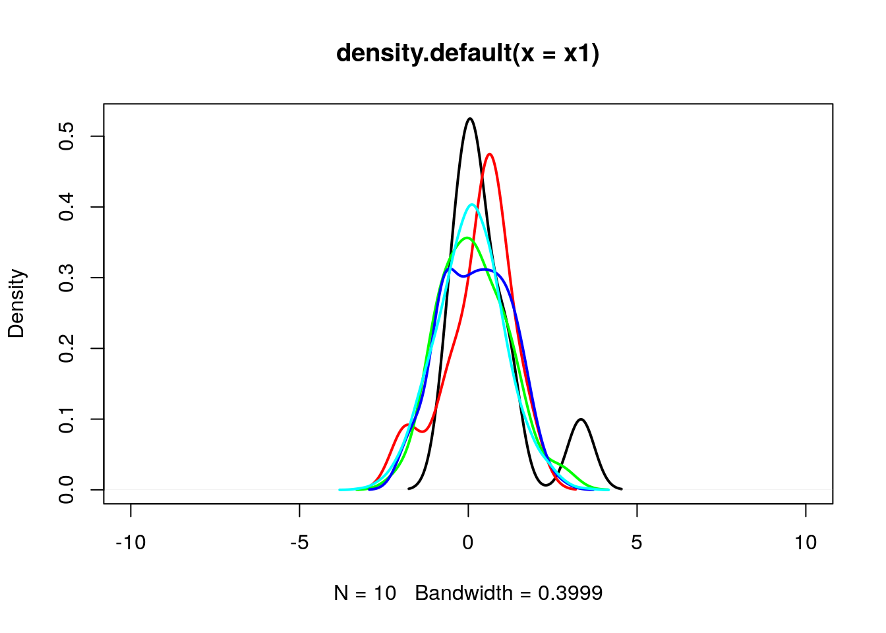
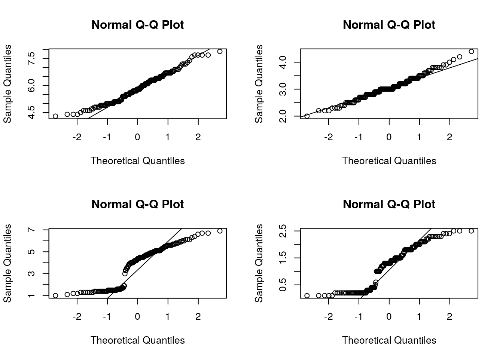
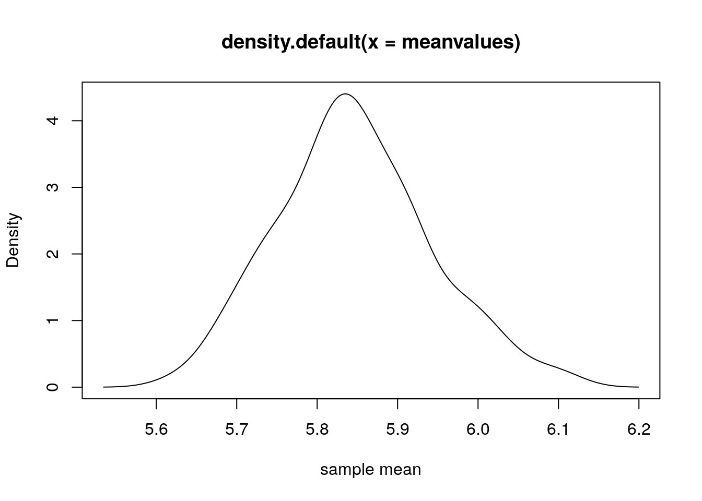
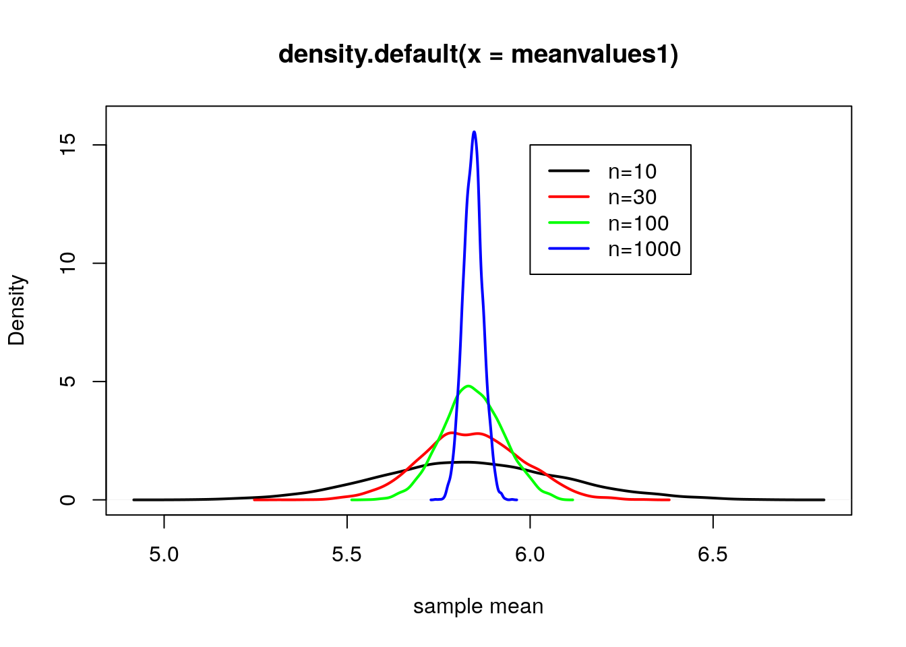

Chapter 9 Data Distributions
9.1 Normal distribution
Normal distribution is explain by 2 parameter, mean and standard deviation
Normal distribution with mean = 0 and sd = 1 is called the standard normal distribution, and is denoted as N(0,1).
Changing the mean value will shift the distribution along x-axis
Changing the standard deviation will change the spread of distribution, thus shape.
9.2 Effect of mean and sd parameter on normal distribution
set.seed(15);
# Fetch 100 random elements from a normal distribution with mean 0, sd 1
x1 = rnorm(n = 100, mean = 0, sd = 1);
# Fetch 100 random elements from a normal distribution with mean 0, sd 3
x2 = rnorm(n = 100, mean = 0, sd = 2);
# Fetch 100 random elements from a normal distribution with mean 5, sd 1
x3 = rnorm(n = 100, mean = 5, sd = 1);
# Fetch 100 random elements from a normal distribution with mean 5, sd 3
x4 = rnorm(n = 100, mean = 5, sd = 2);plot(density(x1), lwd=2, xlim=c(-10,10));
lines(density(x2), col="red", lwd=2);
lines(density(x3), col="green", lwd=2);
lines(density(x4), col="blue", lwd=2);
9.3 Effect of n (sample size) on normal distribution
set.seed(35);
# Fetch 10 random elements from a normal distribution with mean 0, sd 1
x1 = rnorm(n = 10, mean = 0, sd = 1);
# Fetch 20 random elements from a normal distribution with mean 0, sd 1
x2 = rnorm(n = 20, mean = 0, sd = 1);
# Fetch 50 random elements from a normal distribution with mean 0, sd 1
x3 = rnorm(n = 50, mean = 0, sd = 1);
# Fetch 100 random elements from a normal distribution with mean 0, sd 1
x4 = rnorm(n = 100, mean = 0, sd = 1);
# Fetch 1000 random elements from a normal distribution with mean 0, sd 1
x5 = rnorm(n = 1000, mean = 0, sd = 1);As n increases (>30), distribution approximates to normal distribution.
plot(density(x1), lwd=2, xlim=c(-10,10));
lines(density(x2), col="red", lwd=2);
lines(density(x3), col="green", lwd=2);
lines(density(x4), col="blue", lwd=2);
lines(density(x5), col="cyan", lwd=2);
9.4 Use z score to calculate percentile (area below or lower tail)
Percentile is percentage of observations that fall below a given data point
Use pnorm (probability distribution function)
q = quantile. As q increases, the area under the curve below q increases. So as pnorm
## [1] 0.3085375## [1] 0.4207403## [1] 0.4601722## [1] 0.5398278## [1] 0.5792597## [1] 0.6914625## [1] 0.15865539.5 Use z score to calculate Upper tail
## [1] 0.6914625## [1] 0.5792597## [1] 0.5398278## [1] 0.4601722## [1] 0.4207403## [1] 0.30853759.6 Given percentile (area below the curve or lower tail area), find the z score
Use qnorm (Quantile function)
## [1] -0.5244005## [1] -0.2533471## [1] 0## [1] 0.2533471## [1] 0.5244005## [1] 1.2815529.7 Explore the applet
9.8 Evaluating the normal distribution
Histogram though is a nice way to look the overall distribution of data, it sometimes become difficult to check for normality from the plot itself. Another useful alternative way is to draw a normal probability plot (normal Q-Q plot or quantile-quantile plot).
Below we draw QQplot for each features from iris dataset. In a perfectly normal distribution, x-axis (theoretical quantiles) and y-axis (Observed quantiles) should match perfectly well, thus all points will be on the diagonel line. Any deviation (skewness) will show the deviation of datapoints away from the line. Based on which end the deviation is, one can guess whether the given data is either left/right skewed.
A data set that is nearly normal will result in a probability plot where the points closely follow the line. Any deviations from normality leads to deviations of these points from the line.
In the example below
par(mfrow=c(2,2))
qqnorm(iris$Sepal.Length);
qqline(iris$Sepal.Length);
qqnorm(iris$Sepal.Width);
qqline(iris$Sepal.Width);
qqnorm(iris$Petal.Length); # Strongly negatively skewed
qqline(iris$Petal.Length);
qqnorm(iris$Petal.Width); # Strongly negatively skewed
qqline(iris$Petal.Width);
9.9 Sampling distribution
Lets take sepal length from iris dataset. There are 150 flowers. Lets consider this as population i.e. the 150 sepal length values are suppose the population (Which is not true in real sense).
## [1] 5.1 4.9 4.7 4.6 5.0 5.4 4.6 5.0 4.4 4.9 5.4 4.8 4.8 4.3 5.8 5.7 5.4
## [18] 5.1 5.7 5.1 5.4 5.1 4.6 5.1 4.8 5.0 5.0 5.2 5.2 4.7 4.8 5.4 5.2 5.5
## [35] 4.9 5.0 5.5 4.9 4.4 5.1 5.0 4.5 4.4 5.0 5.1 4.8 5.1 4.6 5.3 5.0 7.0
## [52] 6.4 6.9 5.5 6.5 5.7 6.3 4.9 6.6 5.2 5.0 5.9 6.0 6.1 5.6 6.7 5.6 5.8
## [69] 6.2 5.6 5.9 6.1 6.3 6.1 6.4 6.6 6.8 6.7 6.0 5.7 5.5 5.5 5.8 6.0 5.4
## [86] 6.0 6.7 6.3 5.6 5.5 5.5 6.1 5.8 5.0 5.6 5.7 5.7 6.2 5.1 5.7 6.3 5.8
## [103] 7.1 6.3 6.5 7.6 4.9 7.3 6.7 7.2 6.5 6.4 6.8 5.7 5.8 6.4 6.5 7.7 7.7
## [120] 6.0 6.9 5.6 7.7 6.3 6.7 7.2 6.2 6.1 6.4 7.2 7.4 7.9 6.4 6.3 6.1 7.7
## [137] 6.3 6.4 6.0 6.9 6.7 6.9 5.8 6.8 6.7 6.7 6.3 6.5 6.2 5.9Lets randomly select 50 flowers and see the mean sepal length.
## [1] 5.932Lets repeat the sampling process 5 times and see how the mean values varies. As you can see from the result, each time we randomly sample, the sample mean varies. This variation is due to random sampling.
Sampling distribution implies the distribution of sample statistics.
set.seed(15);
sample1 = sample(sl, 50);
sample2 = sample(sl, 50);
sample3 = sample(sl, 50);
sample4 = sample(sl, 50);
sample5 = sample(sl, 50);
print(c(mean(sample1), mean(sample2), mean(sample3), mean(sample4), mean(sample5)))## [1] 5.934 5.866 5.748 5.838 5.902Lets repeat this sampling 100 times and plot the distribution of sample means.
meanvalues = 0;
for(i in 1:100)
{
meanvalues = c(meanvalues, mean(sample(sl, 50)));
}
meanvalues = meanvalues[-1];
plot(density(meanvalues), xlab="sample mean");
9.10 Standard Error
# Standard deviation of sample means is called standard error
print(sd(meanvalues)); # Standard Error## [1] 0.09538724# Estimate standard error from a single sample mean
sample1 = sample(sl, 50);
sd(sample1)/sqrt(length(sample1));## [1] 0.1210215How larger sample sizes have low standard error i.e. larger sample truely represents population
Lets repeat the sampling 5000 times. Also lets explore the different sample sizes n=10, n=30, n=100, n=1000
meanvalues1 = 0;
meanvalues2 = 0;
meanvalues3 = 0;
meanvalues4 = 0;
for(i in 1:5000)
{
meanvalues1 = c(meanvalues1, mean(sample(sl, 10)));
meanvalues2 = c(meanvalues2, mean(sample(sl, 30)));
meanvalues3 = c(meanvalues3, mean(sample(sl, 100, replace = TRUE)));
meanvalues4 = c(meanvalues4, mean(sample(sl, 1000, replace = TRUE)));
}
meanvalues1 = meanvalues1[-1];
meanvalues2 = meanvalues2[-1];
meanvalues3 = meanvalues3[-1];
meanvalues4 = meanvalues4[-1];
# Standard error is less for n=1000 case
# i.e. as sample size increases, sampling bias decreases i.e. sample mean can truely represent the population mean
print(c(sd(meanvalues1),sd(meanvalues2),sd(meanvalues3),sd(meanvalues4)));## [1] 0.25022862 0.13585496 0.08228301 0.02609450# From the plot below, you can see the spread for n=1000 sample is less (blue line) i.e. having low standard error
par(mfrow=c(1,1))
plot(density(meanvalues1), xlab="sample mean", ylim=c(0,16), lwd=2);
lines(density(meanvalues2), xlab="sample mean", col="red", lwd=2);
lines(density(meanvalues3), xlab="sample mean", col="green", lwd=2);
lines(density(meanvalues4), xlab="sample mean", col="blue", lwd=2);
legend(6,15,legend = c("n=10","n=30","n=100","n=1000"), lwd=2, col=c("black","red","green","blue"))
9.11 Confidence interval
First decide what confidece interval you want. Suppose lets say you want to estimate the 95% confidence interval for mean sepal length of iris dataset. So 95% interval means, middle area around mean is 95%. So remaining upper and lower tail area would be 2.5% each i.e. 0.025 (Lower 2.5%, Upper 2.5% so that total = 5%).
Estimate the zscore for 0.025 using qnorm function. Or to estimate the upper tail one can use (0.025+0.95 = 0.975).
Since there are two tails of the normal distribution, the 95% confidence level would imply the 97.5th percentile of the normal distribution at the upper tail.
## [1] -1.959964## [1] -1.959964Now estimate standard error for sepal length
## [1] 0.06761132Now estimate confidence interval (mean +/- z* * SE)
z* * SE is called margin of error.
## [1] 5.710818## [1] 5.975849So we are 95% confident that population mean of sepal length will lie between 5.71 and 5.95.
9.12 Hypothesis test for single sample mean
Consider sepal length from IRIS dataset. Lets assume that its a sample of 150 flowers whose sepal length is measured. However the actual population must be larger than 150 flower. From this sample of 150 flowers estimate the sample mean.
Objective is to compare this sample mean w.r.t some population mean and ask the question whether the sample mean is different/greater/less than the population mean. If answer comes its really different/greater/less, then how much confident/sure we are.
We will proceed slowly.
For now, first estimate sample mean.
## [1] 5.843333So sample mean estimated is 5.84;
Lets ask the question whether mean sepal length of iris flowers are different than 6 or not?
Null hypo: sample mean = 6
Alternate hypo: sample mean not equal to 6
Such hypothesis testing is called two-tailed. Lets do a t-test with two tailed.
##
## One Sample t-test
##
## data: sl
## t = -2.3172, df = 149, p-value = 0.02186
## alternative hypothesis: true mean is not equal to 6
## 95 percent confidence interval:
## 5.709732 5.976934
## sample estimates:
## mean of x
## 5.843333Lets analyze the results. How do u get t-statistics value as -2.31 ?
t = (x - population mean)/ standard error of mean
Lets calculate one by one
mean_sl = mean(sl); # sample mean of sepal length
sd_sl = sd(sl); # sample standard deviation
n_sl = length(sl); # sample size
se_sl = sd_sl/sqrt(n_sl); # standard error of sample mean
tstat = (mean_sl - 6)/se_sl; # t statistics for which hypothesis testing is to be performed
print(tstat);## [1] -2.317166So we saw that test statistics is -2.31
Degree of freedom df is n-1 i.e. 149
Now lets estimate 95% confidence interval of sample mean
zstar= qnorm(0.975);
me_sl = zstar*se_sl; # margin of error at 95% conf interval
conf_low = mean_sl - me_sl;
conf_high = mean_sl + me_sl;
print(c(conf_low, conf_high));## [1] 5.710818 5.975849Now lets estimate pvalue. Its the probability of observing a value > test statistics
since we are using t-test, we can call pt function.
## [1] 0.02185662So this pval is < 0.05, we reject null hypothesis and state that there is strong evidence exist to support the fact that the sample mean of sepal length is significantly different than 6
9.13 One tailed test (Greater)
Null: sample mean = 6 Alternative : sample mean > 6
##
## One Sample t-test
##
## data: sl
## t = -2.3172, df = 149, p-value = 0.9891
## alternative hypothesis: true mean is greater than 6
## 95 percent confidence interval:
## 5.731427 Inf
## sample estimates:
## mean of x
## 5.843333test statistics is -2.3172 as calculated above
Confidence interval has no upper limit
What is probability of observing values > -2.3172 with 149 degree of freedom?
## [1] 0.9890717Here we didnot multiply with 2 since we are performing one tailed test.
pval observed was 0.98 which is > 0.05 so we cant reject null hypothesis. i.e. there is no substantial evidence exist by which we can claim that sample mean of sepal length is > 6.
9.14 One tailed test (Lesser)
Null: sample mean = 6 Alternative : sample mean < 6
##
## One Sample t-test
##
## data: sl
## t = -2.3172, df = 149, p-value = 0.01093
## alternative hypothesis: true mean is less than 6
## 95 percent confidence interval:
## -Inf 5.95524
## sample estimates:
## mean of x
## 5.843333test statistics is -2.3172 as calculated above
Confidence interval has no lower limit
What is probability of observing values < -2.3172 with 149 degree of freedom?
## [1] 0.01092831Here we didnot multiply with 2 since we are performing one tailed test.
pval observed was 0.01 which is < 0.05 so we can reject null hypothesis saying that we have substantial evidence to claim that sample mean of sepal length is < 6.
9.15 Hypothesis test for two sample mean, unpaired
Using this test we can compare two samples and perform 3 possible tests
Whether sample means of the two samples are same or not.
Whether sample1 mean is > sample2 mean or not?
Whether sample1 mean is < sample2 mean or not?
In this case we assume that two samples are not paired. So sample sizes may vary. However we assume that
Both samples are from a normally distributed population.
Observations are independent.
Samples are with uniform variability.
Lets take an example from IRIS dataset. We have 3 flowers, setosa versicolor virginica, each 50 flowers. Our task is to check whether mean sepal length of these three flowers differ among them or not?
sl_setosa = iris[iris$Species=="setosa", "Sepal.Length"];
sl_versicolor = iris[iris$Species=="versicolor", "Sepal.Length"];
sl_virginica = iris[iris$Species=="virginica", "Sepal.Length"];Now lets check whether sample mean of setosa and versicolor are different or not?
##
## Welch Two Sample t-test
##
## data: sl_setosa and sl_versicolor
## t = -10.521, df = 86.538, p-value < 2.2e-16
## alternative hypothesis: true difference in means is not equal to 0
## 95 percent confidence interval:
## -1.1057074 -0.7542926
## sample estimates:
## mean of x mean of y
## 5.006 5.936Now lets look at the output one by one
Lets estimate mean of x and mean of y and cross check with the output.
## [1] 5.006## [1] 5.936Now calculate test statistics which is equal to difference of mean
## [1] -0.93